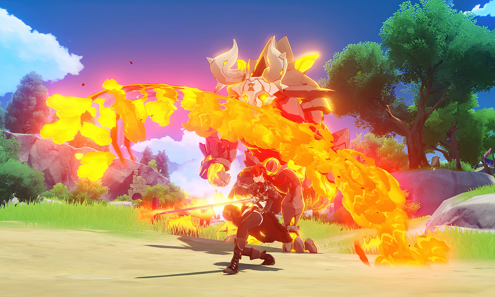
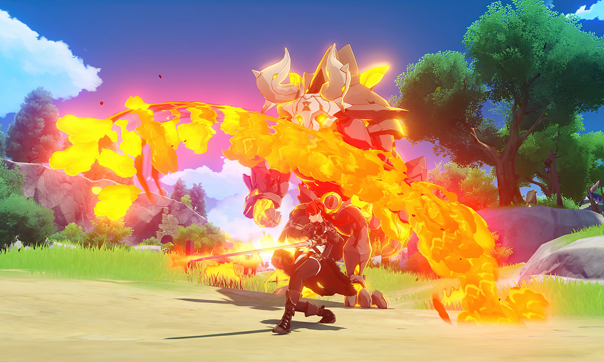

Nikmati petualangan single-player yang memukau. Sebagai pengembara yang datang dari dunia lain, kamu akan memulai perjalananmu untuk menemukan saudaramu yang telah terpisah lama. Kamu pun akan mengungkap misteri Teyvat yang terdalam, serta dirimu sendiri.
Jelajahi Duniamu
Terbang melintasi dunia yang luas, berenang di lautan yang begitu jernih, dan panjat gunung yang menjulang tinggi. Berkelanalah sesukamu dan temukan semua rahasia tersembunyi di balik dunia yang penuh misteri dan keajaiban ini.
Berpetualang Sendiri atau Bertarung Bersama
Kamu dapat bertarung secara solo, atau dapat mengundang temanmu untuk bertarung bersama melawan monster-monster berbahaya secara multi platform di: PS4, iOS, Android, dan PC.
Kuasai Ketujuh Elemen
Genshin Impact bukanlah sebuah game pertempuran biasa. Mengombinasikan kekuatan dari berbagai elemen adalah kunci untuk mengalahkan musuh yang kuat dan memecahkan teka-teki yang menantang.
Bentuk Party Terbaik
Pilih partner bertarungmu. Buatlah Party dengan lebih dari 20 pilihan karakter (masih akan bertambah lagi). Masing-masing karakter memiliki kemampuan, kepribadian, dan gaya bertarung yang unik.
 
